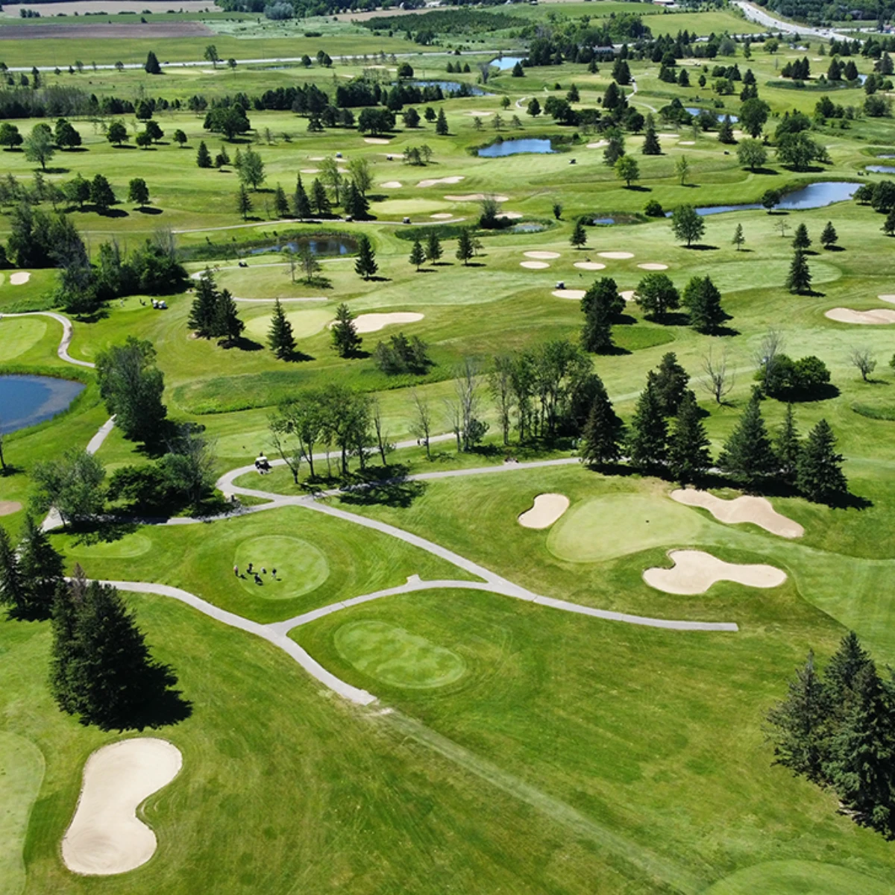
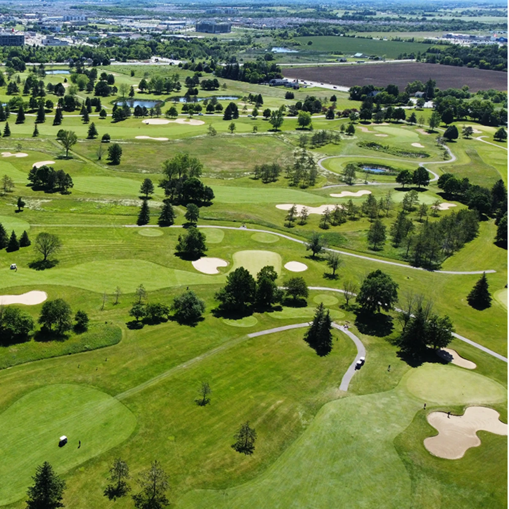
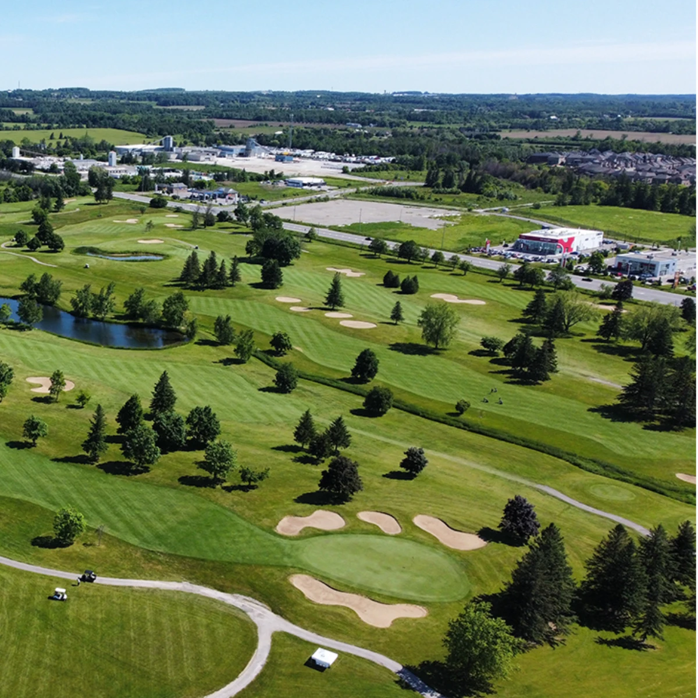

The largest private golf experience in Canada
Three separate 18-hole courses and the best practice facilities around. Each layout has its own character, from the water-laced North to the long, demanding East.

North Course
A precision-focused layout with plenty of bodies of water and trees that demand accuracy off the tee boxes, where strategy beats raw distance.
Smaller greens reward accurate wedge play, while long, tough par 5s and a set of memorable par 3s keep every handicap honest.
South Course
Home to the longest hole on the property, the 544-yard 3rd, the South is a tight, strategic test through mature woodland.
Two island greens make for the trickiest holes on the course, and most greens are protected by bunkers, putting a premium on placement over power.


East Course
The lengthiest of the three at 6,910 yards from the back tees, a long, demanding design that asks for both driver accuracy and distance.
A mix of challenging par 4s builds to standout finishing stretches, with holes 8, 10 and 18 among the most memorable on the property.